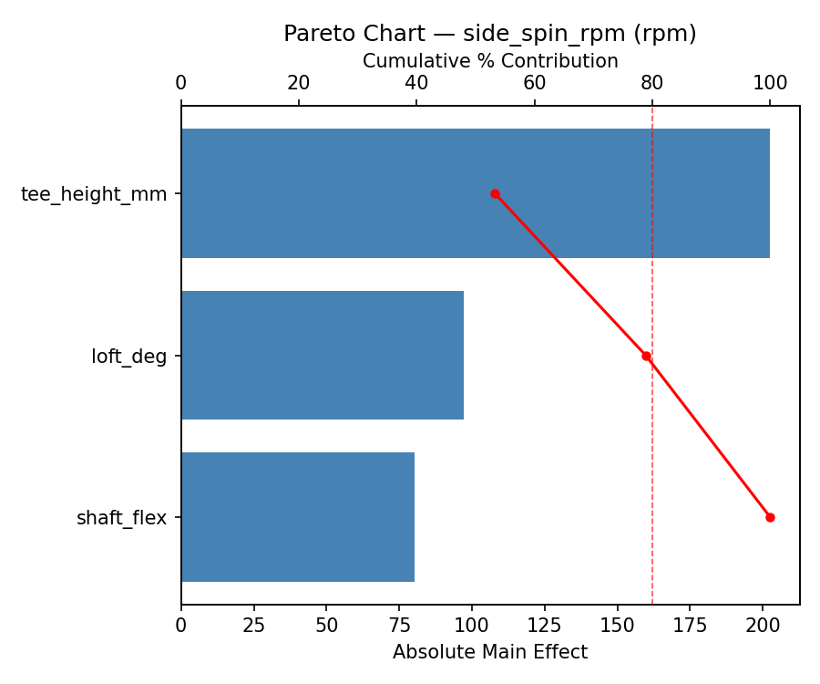
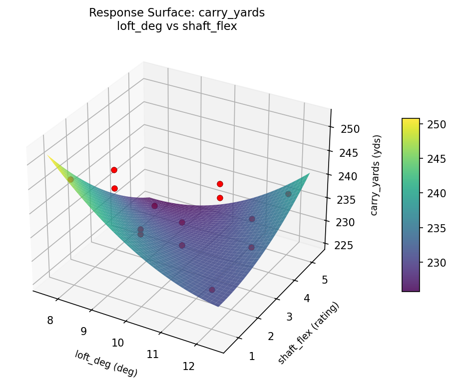
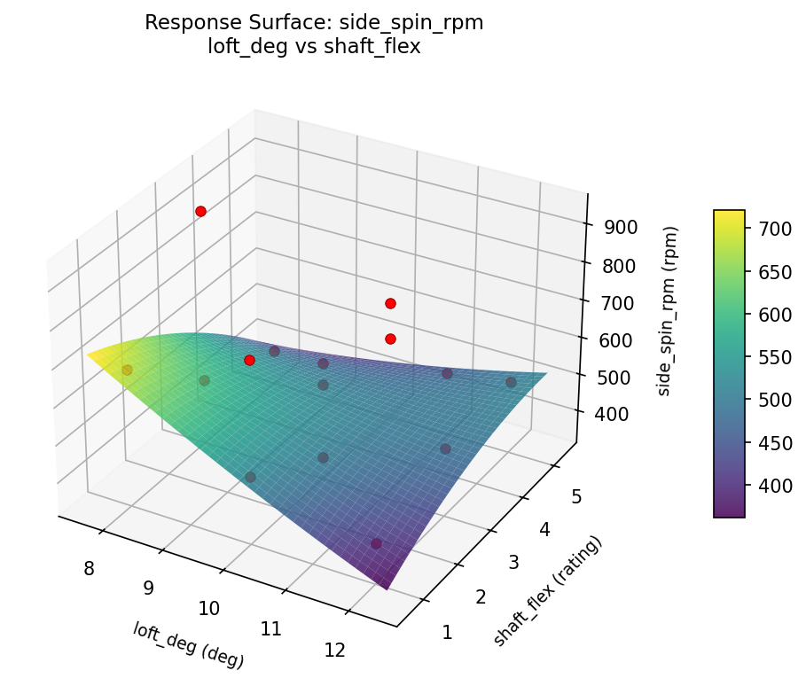

Summary
This experiment investigates golf driver launch conditions. Box-Behnken design to maximize carry distance and minimize side spin by tuning loft angle, shaft flex, and tee height.
The design varies 3 factors: loft deg (deg), ranging from 8 to 12, shaft flex (rating), ranging from 1 to 5, and tee height mm (mm), ranging from 40 to 70. The goal is to optimize 2 responses: carry yards (yds) (maximize) and side spin rpm (rpm) (minimize). Fixed conditions held constant across all runs include swing speed = 95mph, ball = three_piece.
A Box-Behnken design was chosen because it efficiently fits quadratic models with 3 continuous factors while avoiding extreme corner combinations — requiring only 15 runs instead of the 8 needed for a full factorial at two levels.
Quadratic response surface models were fitted to capture potential curvature and factor interactions. The RSM contour plots below visualize how pairs of factors jointly affect each response.
Key Findings
For carry yards, the most influential factors were tee height mm (45.5%), shaft flex (35.7%), loft deg (18.9%). The best observed value was 246.0 (at loft deg = 8, shaft flex = 3, tee height mm = 40).
For side spin rpm, the most influential factors were shaft flex (61.1%), loft deg (35.4%), tee height mm (3.5%). The best observed value was 369.0 (at loft deg = 10, shaft flex = 1, tee height mm = 40).
Recommended Next Steps
- Run confirmation experiments at the predicted optimal settings to validate the model.
- Consider whether any fixed factors should be varied in a future study.
Experimental Setup
Factors
| Factor | Low | High | Unit |
|---|
loft_deg | 8 | 12 | deg |
shaft_flex | 1 | 5 | rating |
tee_height_mm | 40 | 70 | mm |
Fixed: swing_speed = 95mph, ball = three_piece
Responses
| Response | Direction | Unit |
|---|
carry_yards | ↑ maximize | yds |
side_spin_rpm | ↓ minimize | rpm |
Configuration
{
"metadata": {
"name": "Golf Driver Launch Conditions",
"description": "Box-Behnken design to maximize carry distance and minimize side spin by tuning loft angle, shaft flex, and tee height"
},
"factors": [
{
"name": "loft_deg",
"levels": [
"8",
"12"
],
"type": "continuous",
"unit": "deg"
},
{
"name": "shaft_flex",
"levels": [
"1",
"5"
],
"type": "continuous",
"unit": "rating"
},
{
"name": "tee_height_mm",
"levels": [
"40",
"70"
],
"type": "continuous",
"unit": "mm"
}
],
"fixed_factors": {
"swing_speed": "95mph",
"ball": "three_piece"
},
"responses": [
{
"name": "carry_yards",
"optimize": "maximize",
"unit": "yds"
},
{
"name": "side_spin_rpm",
"optimize": "minimize",
"unit": "rpm"
}
],
"settings": {
"operation": "box_behnken",
"test_script": "use_cases/209_golf_driver_launch/sim.sh"
}
}
Experimental Matrix
The Box-Behnken Design produces 15 runs. Each row is one experiment with specific factor settings.
| Run | loft_deg | shaft_flex | tee_height_mm |
|---|
| 1 | 10 | 1 | 40 |
| 2 | 10 | 3 | 55 |
| 3 | 12 | 3 | 70 |
| 4 | 12 | 3 | 40 |
| 5 | 10 | 3 | 55 |
| 6 | 10 | 3 | 55 |
| 7 | 8 | 3 | 70 |
| 8 | 12 | 1 | 55 |
| 9 | 10 | 1 | 70 |
| 10 | 12 | 5 | 55 |
| 11 | 8 | 3 | 40 |
| 12 | 10 | 5 | 70 |
| 13 | 8 | 1 | 55 |
| 14 | 8 | 5 | 55 |
| 15 | 10 | 5 | 40 |
Step-by-Step Workflow
1
Preview the design
$ python doe.py info --config use_cases/209_golf_driver_launch/config.json
2
Generate the runner script
$ python doe.py generate --config use_cases/209_golf_driver_launch/config.json \
--output use_cases/209_golf_driver_launch/results/run.sh --seed 42
3
Execute the experiments
$ bash use_cases/209_golf_driver_launch/results/run.sh
4
Analyze results
$ python doe.py analyze --config use_cases/209_golf_driver_launch/config.json
5
Get optimization recommendations
$ python doe.py optimize --config use_cases/209_golf_driver_launch/config.json
6
Multi-objective optimization
With 2 competing responses, use --multi to find the best compromise via Derringer–Suich desirability.
$ python doe.py optimize --config use_cases/209_golf_driver_launch/config.json --multi
7
Generate the HTML report
$ python doe.py report --config use_cases/209_golf_driver_launch/config.json \
--output use_cases/209_golf_driver_launch/results/report.html
Features Exercised
| Feature | Value |
|---|
| Design type | box_behnken |
| Factor types | continuous (all 3) |
| Arg style | double-dash |
| Responses | 2 (carry_yards ↑, side_spin_rpm ↓) |
| Total runs | 15 |
Analysis Results
Generated from actual experiment runs using the DOE Helper Tool.
Response: carry_yards
Top factors: tee_height_mm (45.5%), shaft_flex (35.7%), loft_deg (18.9%).
Pareto Chart

Main Effects Plot

Response: side_spin_rpm
Top factors: shaft_flex (61.1%), loft_deg (35.4%), tee_height_mm (3.5%).
Pareto Chart

Main Effects Plot

Response Surface Plots
3D surfaces fitted with quadratic RSM. Red dots are observed data points.
carry yards loft deg vs shaft flex

carry yards loft deg vs tee height mm

carry yards shaft flex vs tee height mm

side spin rpm loft deg vs shaft flex

side spin rpm loft deg vs tee height mm

side spin rpm shaft flex vs tee height mm

Multi-Objective Optimization
When responses compete, Derringer–Suich desirability finds the best compromise.
Each response is scaled to a 0–1 desirability, then combined via a weighted geometric mean.
Overall Desirability
D = 0.8370
Per-Response Desirability
| Response | Weight | Desirability | Predicted | Dir |
|---|
carry_yards |
1.5 |
|
246.28 0.9675 246.28 yds |
↑ |
side_spin_rpm |
1.0 |
|
543.66 0.6735 543.66 rpm |
↓ |
Recommended Settings
| Factor | Value |
|---|
loft_deg | 8 deg |
shaft_flex | 4.6 rating |
tee_height_mm | 40 mm |
Source: from RSM model prediction
Trade-off Summary
Sacrifice = how much worse than single-objective best.
| Response | Predicted | Best Observed | Sacrifice |
|---|
side_spin_rpm | 543.66 | 369.00 | +174.66 |
Top 3 Runs by Desirability
| Run | D | Factor Settings |
|---|
| #5 | 0.7102 | loft_deg=8, shaft_flex=3, tee_height_mm=70 |
| #6 | 0.6260 | loft_deg=8, shaft_flex=5, tee_height_mm=55 |
Model Quality
| Response | R² | Type |
|---|
side_spin_rpm | 0.0979 | linear |
Full Multi-Objective Output
============================================================
MULTI-OBJECTIVE OPTIMIZATION
Method: Derringer-Suich Desirability Function
============================================================
Overall desirability: D = 0.8370
Response Weight Desirability Predicted Direction
---------------------------------------------------------------------
carry_yards 1.5 0.9675 246.28 yds ↑
side_spin_rpm 1.0 0.6735 543.66 rpm ↓
Recommended settings:
loft_deg = 8 deg
shaft_flex = 4.6 rating
tee_height_mm = 40 mm
(from RSM model prediction)
Trade-off summary:
carry_yards: 246.28 (best observed: 246.00, sacrifice: -0.28)
side_spin_rpm: 543.66 (best observed: 369.00, sacrifice: +174.66)
Model quality:
carry_yards: R² = 0.7978 (quadratic)
side_spin_rpm: R² = 0.0979 (linear)
Top 3 observed runs by overall desirability:
1. Run #3 (D=0.7122): loft_deg=8, shaft_flex=3, tee_height_mm=40
2. Run #5 (D=0.7102): loft_deg=8, shaft_flex=3, tee_height_mm=70
3. Run #6 (D=0.6260): loft_deg=8, shaft_flex=5, tee_height_mm=55
Full Analysis Output
=== Main Effects: carry_yards ===
Factor Effect Std Error % Contribution
--------------------------------------------------------------
tee_height_mm 4.8214 1.3748 45.5%
shaft_flex 3.7857 1.3748 35.7%
loft_deg 2.0000 1.3748 18.9%
=== ANOVA Table: carry_yards ===
Source DF SS MS F p-value
-----------------------------------------------------------------------------
loft_deg 2 10.1833 5.0917 0.268 0.7715
shaft_flex 2 37.7548 18.8774 0.994 0.4117
tee_height_mm 2 71.7190 35.8595 1.887 0.2131
Lack of Fit 6 239.2762 39.8794 2.099 0.3574
Pure Error 2 38.0000 19.0000
Error 8 277.2762 19.0000
Total 14 396.9333 28.3524
=== Summary Statistics: carry_yards ===
loft_deg:
Level N Mean Std Min Max
------------------------------------------------------------
10 7 236.0000 4.8305 229.0000 241.0000
12 4 234.0000 8.8318 226.0000 246.0000
8 4 235.2500 2.0616 233.0000 237.0000
shaft_flex:
Level N Mean Std Min Max
------------------------------------------------------------
1 4 237.5000 7.5056 229.0000 246.0000
3 7 233.7143 5.2190 226.0000 240.0000
5 4 235.7500 2.9861 232.0000 239.0000
tee_height_mm:
Level N Mean Std Min Max
------------------------------------------------------------
40 4 233.7500 5.1235 229.0000 241.0000
55 7 237.5714 4.6496 232.0000 246.0000
70 4 232.7500 6.2383 226.0000 239.0000
=== Main Effects: side_spin_rpm ===
Factor Effect Std Error % Contribution
--------------------------------------------------------------
shaft_flex 221.5000 39.6737 61.1%
loft_deg 128.4643 39.6737 35.4%
tee_height_mm 12.8214 39.6737 3.5%
=== ANOVA Table: side_spin_rpm ===
Source DF SS MS F p-value
-----------------------------------------------------------------------------
loft_deg 2 58618.0048 29309.0024 1.491 0.2817
shaft_flex 2 133424.9333 66712.4667 3.393 0.0857
tee_height_mm 2 447.7190 223.8595 0.011 0.9887
Lack of Fit 6 98725.6095 16454.2683 0.837 0.6343
Pure Error 2 39324.6667 19662.3333
Error 8 138050.2762 19662.3333
Total 14 330540.9333 23610.0667
=== Summary Statistics: side_spin_rpm ===
loft_deg:
Level N Mean Std Min Max
------------------------------------------------------------
10 7 640.7143 180.4325 420.0000 934.0000
12 4 518.7500 155.3155 369.0000 677.0000
8 4 512.2500 37.5000 484.0000 567.0000
shaft_flex:
Level N Mean Std Min Max
------------------------------------------------------------
1 4 700.5000 162.0175 567.0000 934.0000
3 7 479.0000 105.4498 369.0000 691.0000
5 4 613.5000 131.2110 505.0000 794.0000
tee_height_mm:
Level N Mean Std Min Max
------------------------------------------------------------
40 4 581.2500 244.9495 369.0000 934.0000
55 7 568.4286 101.5478 420.0000 691.0000
70 4 576.2500 171.4845 403.0000 794.0000
Optimization Recommendations
=== Optimization: carry_yards ===
Direction: maximize
Best observed run: #3
loft_deg = 8
shaft_flex = 3
tee_height_mm = 40
Value: 246.0
RSM Model (linear, R² = 0.0283, Adj R² = -0.2367):
Coefficients:
intercept +235.2667
loft_deg -0.6250
shaft_flex -0.5000
tee_height_mm +0.8750
RSM Model (quadratic, R² = 0.4842, Adj R² = -0.4443):
Coefficients:
intercept +237.0000
loft_deg -0.6250
shaft_flex -0.5000
tee_height_mm +0.8750
loft_deg*shaft_flex +3.2500
loft_deg*tee_height_mm +3.0000
shaft_flex*tee_height_mm -1.2500
loft_deg^2 +1.5000
shaft_flex^2 -4.7500
tee_height_mm^2 +0.0000
Curvature analysis:
shaft_flex coef=-4.7500 concave (has a maximum)
loft_deg coef=+1.5000 convex (has a minimum)
tee_height_mm coef=+0.0000 negligible curvature
Notable interactions:
loft_deg*shaft_flex coef=+3.2500 (synergistic)
loft_deg*tee_height_mm coef=+3.0000 (synergistic)
shaft_flex*tee_height_mm coef=-1.2500 (antagonistic)
Predicted optimum (from linear model, at observed points):
loft_deg = 8
shaft_flex = 3
tee_height_mm = 70
Predicted value: 236.7667
Surface optimum (via L-BFGS-B, linear model):
loft_deg = 8
shaft_flex = 1
tee_height_mm = 70
Predicted value: 237.2667
Model quality: Weak fit — consider adding center points or using a different design.
Factor importance:
1. shaft_flex (effect: 5.4, contribution: 56.0%)
2. loft_deg (effect: 2.5, contribution: 25.7%)
3. tee_height_mm (effect: 1.8, contribution: 18.3%)
=== Optimization: side_spin_rpm ===
Direction: minimize
Best observed run: #1
loft_deg = 10
shaft_flex = 1
tee_height_mm = 40
Value: 369.0
RSM Model (linear, R² = 0.1795, Adj R² = -0.0443):
Coefficients:
intercept +573.9333
loft_deg -11.8750
shaft_flex -54.6250
tee_height_mm +65.5000
RSM Model (quadratic, R² = 0.4097, Adj R² = -0.6529):
Coefficients:
intercept +569.0000
loft_deg -11.8750
shaft_flex -54.6250
tee_height_mm +65.5000
loft_deg*shaft_flex +41.0000
loft_deg*tee_height_mm +22.2500
shaft_flex*tee_height_mm -118.7500
loft_deg^2 +28.5000
shaft_flex^2 +20.0000
tee_height_mm^2 -39.2500
Curvature analysis:
tee_height_mm coef=-39.2500 concave (has a maximum)
loft_deg coef=+28.5000 convex (has a minimum)
shaft_flex coef=+20.0000 convex (has a minimum)
Notable interactions:
shaft_flex*tee_height_mm coef=-118.7500 (antagonistic)
loft_deg*shaft_flex coef=+41.0000 (synergistic)
loft_deg*tee_height_mm coef=+22.2500 (synergistic)
Predicted optimum (from linear model, at observed points):
loft_deg = 10
shaft_flex = 1
tee_height_mm = 70
Predicted value: 694.0583
Surface optimum (via L-BFGS-B, linear model):
loft_deg = 12
shaft_flex = 5
tee_height_mm = 40
Predicted value: 441.9333
Model quality: Weak fit — consider adding center points or using a different design.
Factor importance:
1. tee_height_mm (effect: 131.0, contribution: 46.5%)
2. shaft_flex (effect: 109.2, contribution: 38.7%)
3. loft_deg (effect: 41.8, contribution: 14.8%)